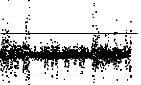
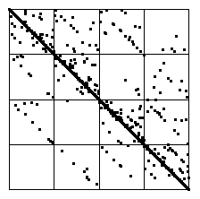

| Here we use the cartoon with generator having turning points |
 |
|  |  |
| Here are the successive differences of the cartoon data. Most differences lie in bin2 and bin3, very few in bin1 and bin4. | Here is the IFS driven by these differences as data points.
Most of the IFS points cluster along the diagonal (between |